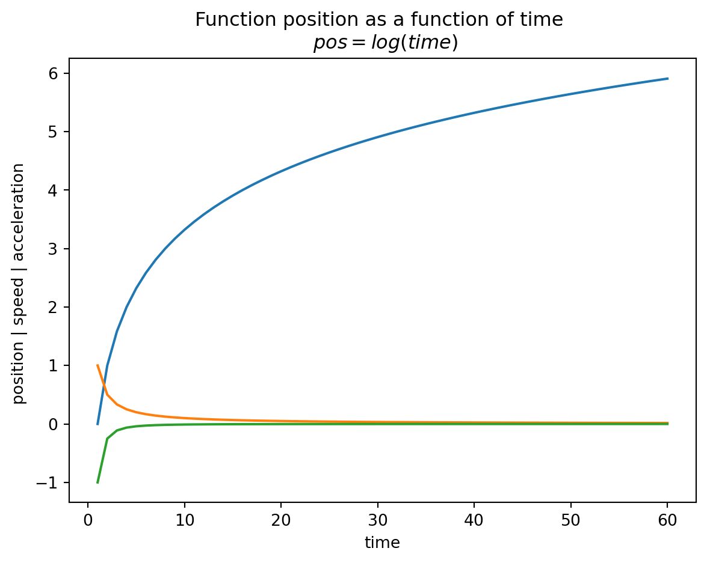

As diferenças finitas são usadas em muitas técnicas numéricas. Por vezes não existe uma expressão para a função, apenas os seus valores numa grelha (ex.: dados experimentais, a continuar num próximo capítulo)
Finite Differences are applied to many numerical techniques. For example if the expression for a function is unknown it can be approximated using …
A ideia é usar a expansão em série de Taylor, para a frente e para trás, com passos de diferente dimensão, para obter a derivada da ordem pretendida (com menor ou maior precisão) Começa-se com, por exemplo:
A soma e a subtração das expansões para a frente e para trás permitem eliminar alguns termos. São assim obtidas as diferentes derivadas, com uma precisão até certa ordemNo exemplo seguinte são eliminados os termos pares ou ímpares na ordem das derivadas
f =lambda x : np.log2(x)df =lambda x : 1/xdff =lambda x : -1/x**2x = np.linspace(1,60,60)plt.close()plt.plot(x,f(x),x,df(x),x,dff(x))plt.title("Function position as a function of time \n $pos = log(time)$")plt.xlabel("time")plt.ylabel("position | speed | acceleration ")plt.show()

a = [(f(x+0.5)-f(x))/0.5for x in x]a2 = [(f(x+0.5)-f(x-0.5))/2*0.5for x in x]a4 = [(-f(x+2*0.5)+8*f(x+0.5)-8*f(x-0.5)+f(x-2*0.5))/12*0.5for x in x]plt.close()plt.plot(x,df(x),x,a,x,a2, x,a4)plt.title("approximation of acceleration function df")plt.show()
/tmp/ipykernel_111243/1142847347.py:1: RuntimeWarning: divide by zero encountered in log2
f = lambda x : np.log2(x)